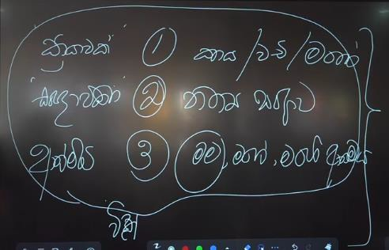
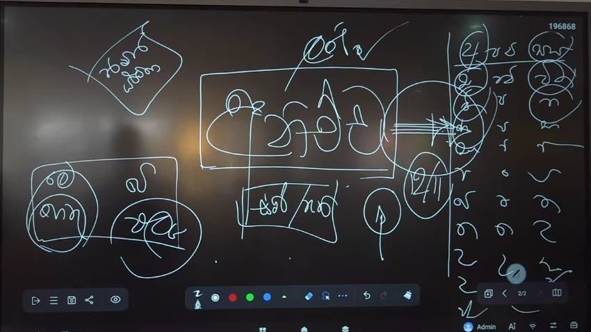
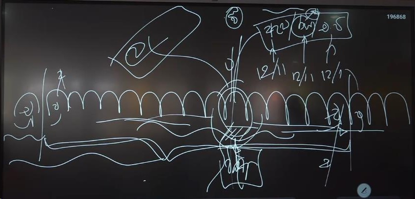

නමෝ තස්ස භගවතො අරහතො සම්මා සම්බුද්ධස්ස... !!!

සත්වත්වය වනාහි අනාත්මියව සකස් වන්නාවූ මූලික ස්කන්ධ පංචකයන් වැරදි ලෙස ගෙන එසේ සකස් වන්නාවූ ස්කන්ධ පංචකයන් මනෝ මූලිකව විපල්ලාසයෙන් වෙනස් කරගනිමින් ඒ සඳහා කාය කර්ම, මනෝ කර්ම, වචී කර්ම සිදු කරමින් සසරේ යාම වේ. පරමාර්ථ වශයෙන් පවත්නා වූ නාම, රූප, විඤ්ඤාණ ධර්මතාවයන් ප්රඥප්ති වශයෙන් සකස් කරගැනීමෙන් ඇසුරු කිරීම මෙසේ සිදුවීමට හේතුව වශයෙන් භාග්යවතුන් වහන්සේ ආර්ය සත්ය දේශනාව තුළින් දේශනා කරන ලදී. එනම් සත්ය වශයෙන් පවත්නා පරමාර්ථ ගැන තිබෙන්නාවූ නොදැනුවත්කම නිසා එම ධර්මතා වැරදි ලෙසින් ගෙන සසර යාම සත්ව ස්වරූපය ලෙසින් දැනගත යුතුය. මෙසේ පෘථග්ජන අපගේ ජීවිතය යනු "මඤ්ඤනාව" කි. එනම් අනාත්මියව සකස් වන්නාවූ ස්කන්ධ පංචකයන් පිළිබඳව අනවබෝධයෙන් මම, මගේ කරගනිමින් සකස් කරගන්නා එක්තරා වැරදි වටහා ගැනීමකි. එසේම යම් පුද්ගලෙක් ස්කන්ධාදි ධර්මතා ගැන යථාවාදී ස්වභාවයෙන් ඒ ගැන විමසා බැලීමක් කෙරේ නම් එය "මමඤ්ඤ" ලෙසින් හඳුන්වනු ලැබේ. එලෙසම මඤ්ඤනාවක් නොමැති තත්ත්වය "නමඤ්ඤ" ලෙසින් හඳුන්වනු ලබන අතර එහිදී ස්කන්ධාදි ධර්මතාවයන් අවබෝධයෙන් එහි ස්වරූපයන් හඳුනා ගනිමින් ඇසුරු කිරීමට "අනිසි" ධර්මතා ලෙස අවබෝධ කරගෙන සිටිමියි.
"නමඤ්ඤ" තත්ත්වයට පැමිණීමටනම් අනාත්මියව සකස් වන්නාවූ ස්කන්ධ පංචකයන් ධර්මතා 18 අනුව හේතු සහිතව විවිධාකාරයෙන් විමසීමෙන් ("මමඤ්ඤ") අවබෝධ කරගත යුතුය. ජීවිතය ලෙසින් හඳුනා ගත හැකිවනුයේ අරමුණකට එදිනෙදා අප සිදු කරනා කාය කර්ම, මනෝ කර්ම, වචී කර්ම කෘත්යන්ගේ එකතුවක් වේ. එලෙසින්ම තවත් ආකාරයකින් ගතහොත නිතය වශයෙන් ඇසුරු කරන්නාවූ සංඥා සමූහයක එකතුවක් ලෙසද හඳුනා ගත හැකිය. එනම් සම්මුති වශයෙන් ඇත්තාවූ සියළු ධර්මතාවයන් නිත්ය ධර්මතා ලෙස ගෙන ඇසුරු කිරීමක් වේ. එසේම තවත් ආකාරයකින් මම, මගේ, මගේ ආත්මය කොට සලකමින් සකස් වන්නාවූ ධර්මතා ආත්මීය වශයෙන් ඇසුරු කිරීමක් ලෙසද හැඳින්විය හැකිවේ. මේ ආකාරයෙන් කෙසේ ජීවිතය ලෙසින් ගත්තත් කාලාත්රයේම සකස් වන්නාවූ ධර්මතාවය ලෙස භාග්යවතුන් වහන්සේ ආර්ය සත්ය දේශනාවේදී දේශනා කරන්නේ ස්කන්ධ පංචකයක සමුදය වීමක් අනවබෝධයෙන් ඇසුරු කිරීමක් ජීවිතය ලෙසින් අප විසින් ගෙන ඇති බවය. එලෙසින් ස්කන්ධ පංචකයකින් තොරව සම්මුති යථාර්ථයක් පැවතිය නොහැකි බව අප විසින් අවබෝධ කරගත යුතුය. එලෙස සම්මුති වශයෙන් අප විසින් සකස් කරගන්නා ධර්මතා නම් විඤ්ඤාණයෙන් දැනගන්නා ස්කන්ධ පංචකයක ප්රතිඵලයක් වීමයි.
ආර්ය සත්ය දේශනාව තුළින් භාග්යවතුන් වහන්සේ අපගේ ජීවිතයේ යථාර්ථය පැහැදිලි කිරීමට මෙසේ ස්කන්ධ පංචකය මගින් පෙන්වා දෙන්නේ එය අපට වර්තමාන මොහොතට දැනෙන ධර්මතාවයක් නිසාවෙනි. එනම් සත්ත්වත්වය ආරම්භය සිදුවන්නේ ස්කන්ධ පංචකයක් වැරදි ලෙස ඇසුරු කිරීමෙන් නිසාය. මෙසේ අප විසින් ස්කන්ධ පංචකයන් වැරදි ලෙස වටහා ගනිමින් ඒ සකස් වන්නාවූ ධර්මතාවයන් ආත්ම වශයෙන් ගත්තත් සකස් වන්නාවූ ධර්මතා වල පවත්නා වූ ආදීනවය භාග්යවතුන් වහන්සේ ආර්ය සත්ය දේශනාව තුළින් අපහට පෙන්වා දෙන ලදී. අප විසින් මෙසේ ස්කන්ධ පංචකයන් ගැන මනාලෙස විමසීමෙන් ඒ පිළිබඳ සකස් වන්නා වූ සත්ය අවබෝධය නිසාමෙන් දුක පිළිබඳව වටහා ගැනීමට හැකියාව පවතී. එසේ වීමට හේතුව නම් සකස් වන්නා වූ "ස්කන්ධ පංචකයන්" දොස් සහිත බැවින් යුක්ත වන නිසාය.

භාග්යවතුන් වහන්සේ ආර්ය සත්ය දේශනාව මගින් අපට පෙන්වා දෙන ස්කන්ධ පංචකයේ පවත්නා ප්රධානම ආදීනවය නම් එහි පවත්නා "අනිච්ච" ලක්ෂණයෙන් යුක්ත බවයි. අනිච්ච ලක්ෂණයෙන් යුක්ත වන්නා වූ ස්කන්ධ පංචකය අවබෝධ කරගැනීමටනම් අප විසින් ස්කන්ධ පංචකය අනිච්ච ලක්ෂණයෙන් යුක්ත වන බව අවබෝධ කරගත යුතුය. එසේ දැකීමෙන් මම, මගේ, මගේ ආත්මය කොට ගන්නා වූ ස්කන්ධ පංචකයේ සත්ය අවබෝධ කරගැනීමට හැකියාව පවතින අතර ස්කන්ධ පංචකය ගැන අනවබෝධයෙන් සිදු කරන්නා වූ කාය කර්ම, මනෝ කර්ම, වචී කර්ම සිදු කිරීමෙන් රැස් කරන්නා වූ කුසලාකුසල කර්මයන් ගැන නිසි අවබෝධයක් ලැබීමට නියමිතවේ.
මෙලෙස හේතු නිසා සකස් වන්නා වූ ස්කන්ධ පංචකයන් මම කියා උපාදානයෙන් අල්ලාගෙන සිටින ස්වභාවයෙන් මිදීමට නම් ස්කන්ධ පංචකයෙහි "අනිච්ච" ලක්ෂණය අප විසින් අවබෝධ කරගත යුතුවේ. එලෙසින් බැලීමේදී කාය කර්ම, මනෝ කර්ම, වචී කර්ම වලින් සකස් වන්නා වූ කර්ම ශක්තීන් කෙමෙන් දුරු වීම සිදුවීමට නියමිතවේ. ස්කන්ධ පංචකයේ අනිච්ච ලක්ෂණය විමසා බැලීමටනම් ඒ සඳහා ආර්ය සත්ය දේශනාව මගින් දේශනා කරන ලද ක්රම වේදයට අනුව අනිච්ච ලක්ෂණය විමසා බැලිය යුතුවේ. මූලිකව ඒ සඳහා අප විසින් සකස් වන්නා වූ ධර්මතා පිළිබඳව යම් චින්තන හැකියාවක් ගොඩනගා ගත යුතුවේ. ඒ තුළින් අපට ධර්මතා ගැන විවිධ ස්වරූපයෙන් විමසා බැලීමට හැකියාව ගොඩනැගෙනු ඇත. ස්කන්ධ පංචකයේ සකස් වීම පිළිබඳව විමසීමේදී අප විසින් එය සිදු කල යුතු ආකාරය නම් එහි පවත්නා දොස් සහිත බව අවබෝධ කර ගැනීම වේ. එහිදී සිදු විය යුතු දෙය නම් ස්කන්ධ පංචකය "අනිච්ච" ලෙස විමසීමය. වර්තමානයේ ස්කන්ධ පංචකයේ පවත්නා වූ "අනිච්ච" ස්වභාවය හේතුවෙන් සත්ත්වයා කාලාත්රයේම කායික හෝ මානසික වශයෙන් දුක් දොම්නස් සකස් කරගන්නා බව භාග්යවතුන් වහන්සේ දේශනා කරන ලදී. එය භාග්යවතුන් වහන්සේ පටිච්ච සමුප්පාද දේශනා පාළියෙහි දී "ජාතිපච්චයා ජරාමරණං සෝක පරිදේවදුක්ඛදෝමනස්සුපායාස සම්භවන්ති" ලෙසින් දක්වා ඇත්තේ ස්කන්ධ පංචකය නිසා සත්ත්වයා සකස් කරගන්නා වූ දුක් දොම්නස් පිළිබඳව වේ.
මෙලෙස සෝකයන්, දුක් දොම්නස් සකස් කරගන්නේ කුමක් නිසාද යන්න විමසා බැලීමේදී එහිදී දැනගත යුතු කරුණ නම් ස්කන්ධ පංචකයේ පවත්නා අනිච්ච ස්වභාවය නිසාවේ. භාග්යවතුන් වහන්සේ ස්කන්ධ පංචකයේ පවත්නා අනිච්ච ස්වභාවය දේශනා කරනු ලබන්නේ වර්තමාන මොහොතට හේතුයේදී එලයන් සකස් වන්නා වූ ස්වභාවයෙන් වේ. එනම් හේතු ඇති කල්හි ඵලය සකස් වන බවය. මෙලෙස භාග්යවතුන් වහන්සේ අනිච්ච ස්වභාවය පැනවීම සිදු කර ඇත්තේ යම් ස්ථිර ලෙස විද්යමාන ධර්මතාවයකට හෝ විද්යමාන නොවන ධර්මතාවයකට නොවන බව අප විසින් වටහා ගත යුතු ඇත. මෙහිදී ස්කන්ධ පංචකයේ සමුදය වීම සිදු වන ආකාරය අප විසින් ධර්මතා 18 ඔස්සේ විමසා බලන ලදී. එහිදී මූලික ස්කන්ධ පංචකය සකස් වීමට යෙදුනා වූ හේතූන් සහිතව ස්කන්ධ පංචකය සකස් වන්නා වූ ආකාරය නැවත නැවත විමසා බලමින් අප විසින් තේරුම් ගත යුතුය (තින්තන් සංගතය), එහිදී හේතු වශයෙන් යෙදෙන්නා වූ ධර්මතා 3 කින් එල 5 ක් ලෙස සකස් වන්නාවූ ස්කන්ධ පංචකය සකස් වන ආකාරය අප විසින් හොඳින් විමසා බැලීමේදී ස්කන්ධ පංචකයේ පවත්නා අනිච්ච ස්වභාවය අවබෝධ වීමට නියමිතය.
හේතු ඵල ලෙස භාග්යවතුන් වහන්සේ එහි පවත්නා ස්වභාවය දේශනා කරන ලද්දේ ස්කන්ධ පංචකයේ පවත්නා පරමාර්ථ ස්වභාවය වේ. එනම් පරමාර්ථ ලෙස සත්ය වශයෙන් පවතින්නාවූ ස්වභාවයි. එලෙස පරමාර්ථ වශයෙන් "අනිච්ච" විමසීමේදී ස්කන්ධ පංචකය සකස් වීමට යෙදෙන්නාවූ ධර්මතා එකිනෙකට ප්රත්ය වී එසේ ප්රත්ය වන්නාවූ ධර්මතා නිසා කිනම් ධර්මතා සකස් වන්නේද යන්න පිළිබඳව ආර්ය සත්ය දේශනාව තුලින් ස්කන්ධ පංචකය ගොඩනැගෙන ආකාරය භාග්යවතුන් වහන්සේ දේශනා කරන ලදී. එහි අන්තර්ගත කර ඇත්තේ සත්ය වශයෙන් පවත්නා පරමාර්ථ ධර්මතා වේ. එනම් ප්රඥප්ති වලින් බැහැරව සත්ය වශයෙන් පවතින පරමාර්ථ ධර්මතා ගෙන සකස් වන්නාවූ ස්වභාවය දේශනා කිරීමයි. එහිදී හේතු හා ඵල යන ධර්මතා දෙකම පරමාර්ථ වශයෙන් යෙදීම කෙසේ වන්නේද යන්න ගෙන යෙදෙන්නාවූ පරමාර්ථ ධර්මතාවයන් චිත්ත, චෛතසික, රූප වශයෙන් බෙදා වෙන් කරමින් ස්කන්ධ පංචකයේ අනිච්ච ලක්ෂණය දේශනා කරන ලදී.
මෙලෙස පරමාර්ථ ධර්මතා ඔස්සේ "අනිච්ච" ලක්ෂණය අප හට අවබෝධ කරගැනීම සඳහා එය භාග්යවතුන් වහන්සේ දේශනා කර ඇත්තේ හේතු ඵල ලෙසය. එනම් අප විසින් අනිච්ච ලක්ෂණය අවබෝධ කරගැනීමටනම් ස්කන්ධ පංචකය විමසීම සිදු කල යුත්තේ හේතු ඵල ධර්මයට අනුකුලවය. හේතු ඵල දහමට අනුව අනිච්ච ලක්ෂණ විමසීමටනම් භාග්යවතුන් වහන්සේ එසේ බැලීම සඳහා දේශනා කර ලද්දේ "පටිච්ච සමුප්පාද" ක්රම වේදයයි. එනම්:
"අවිජ්ජා පච්චයා සංඛාරා, සංඛාරා පච්චයා විඤ්ඤාණං, විඤ්ඤාණ පච්චයා නාමරූපං, නාමරූප පච්චයා සළායතනං, සළායතන පච්චයා ඵස්සෝ, ඵස්ස පච්චයා වේදනා, වේදනා පච්චයා තණ්හා, තණ්හා පච්චයා උපාදානං, උපාදාන පච්චයා භවෝ, භව පච්චයා ජාති, ජාති පච්චයා ජරාමරණං"
ආදී ලෙසින් අංශ 12 කින් යුත් පටිච්ච සමුප්පාද අංශ අනුව ස්කන්ධ පංචකයේ අනිච්ච ලක්ෂණ විමසීම සිදු කල යුතු බවයි. මෙහිදී භාග්යවතුන් වහන්සේ දේශනා කරන ලද්දේ හේතු ඇති කල්හි ඒ හේතුව නිසා සකස් වන්නාවූ ඵලයයි. එනම්,
අවිද්යා නමැති හේතුව නිසා සංස්කාරයෝ හටගනිති.
සංස්කාරයන් නමැති හේතුව නිසා විඥානය හට ගනී.
විඥානය නමැති හේතුව නිසා නාමරූපය හටගනී.
නාමරූපය නමැති හේතුව නිසා ෂඩායතනය හටගනී.
ෂඩායතනය නමැති හේතුව නිසා ස්පර්ශය හටගනී.
ස්පර්ශය නමැති හේතුව නිසා වේදනාව හටගනී.
වේදනාව නමැති හේතුව නිසා තෘෂ්ණාව හටගනී.
තෘෂ්ණාව නමැති හේතුව නිසා උපාදානය හටගනී.
උපාදානය නමැති හේතුව නිසා භවය හටගනී.
භවය නමැති හේතුව නිසා ජාතිය වේ.
ලෙසින් ඒ ඒ හේතුව යෙදෙන විට සකස් වන්නාවූ ඵලයන් සකස් වී ස්කන්ධ පංචකයේ (දුක) සකස් වීමයි. එනම් අප විසින් ස්කන්ධ පංචකයේ අනිච්ච ලක්ෂණය අවබෝධ කර ගත යුතු මාවත නම් පටිච්ච සමුප්පාද ධර්මතා මගින් හේතු ඵල දහම විමසීමයි. එලෙස හේතු ඵල දහමට අනුකුලව ස්කන්ධ පංචකයේ අනිච්ච ලක්ෂණය අවබෝධ කිරීමෙන් චතුරාර්ය සත්ය අවබෝධ වීමට නියමිතය.
ස්කන්ධ පංචකයේ අනිච්ච ස්වභාවය විමසීම සම්මුති ආකාරයෙන් (හේතු ඵල දහමට අන්ය ආකාරයෙන්) විමසීමෙන් දුක අවබෝධ වීම නොවන දෙයකි. එනම් බාහිර වශයෙන් රූපයේ ස්වභාවයන් ආදී ධර්මතා අනිච්ච ලෙස මෙනෙහි කිරීමෙන් දුක අවබෝධ කරගැනීමට හැකියාවක් නොපවතී. ස්කන්ධ පංචකයේ අනිච්ච ස්වභාවය විමසීමට නම් ඒ පිළිබඳව අප විසින් විමසීමට අවශ්ය වන මූලික දැනුම ගොඩ නගා ගත යුතුය. එනම් වර්තමාන මොහොතට ස්කන්ධ පංචකයේ සකස් වීම විමසීම සඳහා අවශ්ය වන මූලික දැනුම වේ. සංස්කාර ධර්මතාවයන්ගේ පොදු ලක්ෂණයන් වන ත්රිලක්ෂණ සාමාන්ය වචන තුනක් පමණක් නොවන අතර ඒවා ලක්ෂණ වශයෙන් අවබෝධ කරගත යුතු ධර්මතා ලෙසින් පවතී. එලෙසින් ස්කන්ධ පංචකය අවබෝධ කිරීම අනිච්ච, දුක්ඛ, අනාත්ම ලක්ෂණ වශයෙන් සිදු කල යුතු කෘත්යක් වේ. එනම් ස්කන්ධ පංචකය නිරෝධය සඳහා සංස්කාර ධර්මයන්ගේ ස්වභාවය ත්රිලක්ෂණ වශයෙන් අවබෝධ කර ගත යුතුවේ.

භාග්යවතුන් වහන්සේ අනිච්ච, දුක්ඛ, අනාත්ම ලක්ෂණයන් ඇතැයි දේශනා කරන ලද්දේ සම්මුති වශයෙන් පවත්නා වූ ගස්, ගල්, ගෙවල්, යාන වාහන ආදී ද්රව්යන් වල නොවන අතර ත්රිලක්ෂණ පෙන්වා දෙන ලද්දේ කාලාත්රයේම සත්ව, පුද්ගල, ආත්ම වශයෙන් අනවබෝධයෙන් ඇසුරු කරන ස්කන්ධ පංචකය තුළය. මෙයින් අප තේරුම් ගත යුත්තේ දුක නිරෝධ කිරීමට බාහිර ස්වභාවය මෙනෙහි කිරීමෙන් ඵලයක් ලබාගත නොහැකි බවය. වර්තමාන භවයේ ප්රතිසන්ධියේ සිට චුති සිත දක්වා අප විසින් ගන්නා වූ දැක්මනම් මම කියා ධර්මතාවයක් පවතින බවත්, තවද සසරේ මම කියා ධර්මතාවයක් පැවතුන බවට ගන්නා වූ දිට්ඨි ස්වභාවයකින් සත්වයා යුක්ත වන බව අනෙක් ස්වභාවය වේ. එලෙසින් සකස් වන්නේ ස්කන්ධ පංචකය වරදවා ගැනීම නිසා බව භාග්යවතුන් වහන්සේ දේශනා කරන ලදී. ස්කන්ධ පංචකය එලෙසින් ගැනීම නිසා සත්වයා කාලාත්රයේම නිච්ච සංඥාව සකස් කරගැනීම සිදු කරගන්නා බව අප විසින් අවබෝධ කරගත යුතුය.
ස්කන්ධ පංචකය හේතු ඵල දහමට අනුව විමසීමෙන් යම් අවස්ථාවක වර්තමාන මොහොතට සකස් වන්නා වූ ස්කන්ධ පංචකය මම යනුවෙන් ගැනීමේ ස්වභාවයකින් යුක්ත වන අතර එහිදී මෙලෙස සඳහන් කල සියළු ආකාර වලින් ස්කන්ධ පංචකය වරදවා ගැනීමේ ස්වභාවයන් අතර කිසිදු වෙනසක් නොමැති බව අප විසින් දැනගත යුතුය. එනම් ඒ සියළු අවස්ථාවන් වලදී සිදුවී ඇත්තේ ස්කන්ධ පංචකය වරදවා ගැනීම වේ. නමුත් අප විසින් ධර්මතා 18 පටිච්ච සමුප්පාද අංග වශයෙන් වෙන වෙනමම ගෙන විමසීමෙන් සසරේ හෝ අතීතානාගත වශයෙන් හෝ වර්තමාන මොහොතට සකස් වන්නා වූ නිච්ච, සුඛ, සුභ, ආත්ම ස්වභාවය දුරුවී ස්කන්ධ පංචකයේ "අනිච්ච" ලක්ෂණය අවබෝධ කරගැනීමට හැකියාව පවතී. තවද අතීතානාගත වශයෙන් හෝ වර්තමාන වශයෙන් කෙසේ ස්කන්ධ පංචකයෙන් අරමුණු කලත් එහි සාමාන්ය ස්වභාව නම් අනිච්ච, දුක්ඛ, අනාත්ම වශයෙන් යුක්ත වීමයි. නමුත් අවිද්යාව නිසා සත්වයා විසින් ඇසුරු කරනු ලබන්නේ පරමාර්ථ වශයෙන් පවතින්නා වූ දුක්ඛ ලක්ෂණයෙන් යුත් ධර්මතාවයන්ට සම්මුති වශයෙන් යොදාගත් පැනවීම් වේ. එනම් වර්ණ, ශබ්ද ආදී ආරම්මණයන් සම්මුති වශයෙන් ගෙන පරමාර්ථ ධර්මතා වල විකෘති ස්වරූපයන් ඇසුරු කිරීමක් වේ.
පරමාර්ථ ධර්මතා වෙන් වෙන් වශයෙන් ගත් කල ඒ ඒ ධර්මතා පෞද්ගලික ලක්ෂණයන් ගෙන එකිනෙකට වෙනස් ස්වභාවයන් ගන්නා ධර්මතා වලින් යුක්ත වන අතර පරමාර්ථ ධර්මතා වල පවත්නා පොදු ලක්ෂණය නම් අනිච්ච, දුක්ඛ, අනාත්ම ලක්ෂණයෙන් යුක්ත වීමයි. සාමාන්ය ලක්ෂණයන් පැනවීමක් නොවන අතර එය සත්ය ස්වභාවයයි. පරමාර්ථය යම් අවස්ථාවක සම්මුති ආකාරයෙන් ගැනීමට නම් ධර්මතා ලක්ෂණ විපල්ලාසයක් සිදුවිය යුතුය. ධර්මතා විපල්ලාසය සිදුවීම වන්නේ ස්කන්ධ පංචකය සකස් වීමට යෙදෙන්නාවූ එක් භූමියක් ඇසුරු වෙමින් නොව සත්වයා ඒ සඳහා උත්සහ කිරීම සියළු භූමින් හෝ කිහිපයකින් අරමුණු සකස් කරගැනීම වශයෙන් සම්මුති ස්වභාවය සකස් කරගැනීම සිදු කරනු ලැබේ. නමුත් ස්කන්ධ පංචකයේ අපට හමුවිය යුතු ධර්මතාවය නම් සම්මුති සත්ය නොවන අතර එහි පවත්නා පොදු ලක්ෂණයන් වන අනිච්ච, දුක්ඛ, අනාත්ම යන සාමාන්ය ලක්ෂණයි.
දේශනාවේ YouTube සබැඳියාව: https://www.youtube.com/watch?v=cTy1o4dYns8